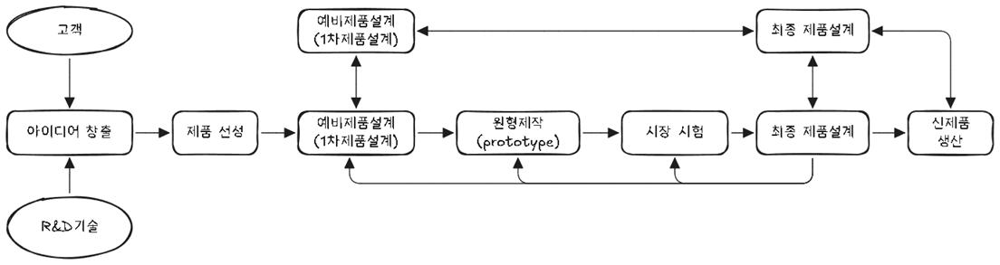
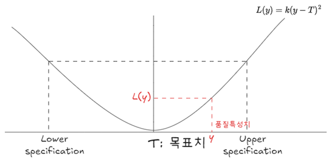

flowchart TB 1[구성요소 공유형] 2[구성요소 교환형] 3[맞춤형] 4[혼합형] 5[버스형] 6[조립형] 0[모듈러 유형] --- 1 & 2 & 3 & 4 & 5 & 6
제품개발 기술
Keywords
제품개발 과정, 제품 설계, 동시공학, 모듈러, 신뢰도, 카노, 품질기능전개, 강건설계, 친환경설계, 역공학, VRP, DFSS, QFD
제품개발 과정

제품 선정 단계에서는 타당성 조사가 이루어지면 마케팅 부서에서 담당한다. 제품선정 과정 산출물로 성능명세서가 개발되며 예비제품설계 입력이 된다. 성능명세서가 최종 제품설계 단계에서 설계 기술자에게 보내지면 예비적인 기술명세서와 세부적인 설계명세서가 개발된다.
- 제품 개발 과정
-
- 아이디어 도출(Concept Ideation)
- 목표: 시장의 니즈와 트렌드를 분석해 참신한 제품 아이디어를 창출.
- 활동:
- 시장 조사 및 고객 피드백 분석
- 경쟁사 제품 벤치마킹
- 브레인스토밍 및 워크숍 진행
- 기술 개발 동향 및 신기술 검토
- 시장 조사 및 고객 피드백 분석
- 결과물: 여러 개의 제품 아이디어 리스트
- 목표: 시장의 니즈와 트렌드를 분석해 참신한 제품 아이디어를 창출.
- 제품 선정(Idea Screening)
- 목표: 도출된 아이디어 중 기술적, 상업적으로 실현 가능성이 높은 아이디어를 선별.
- 활동:
- 시장성, 수익성 분석
- 기술적 구현 가능성 평가
- 리스크 분석 및 비용 추정
- 내부 역량 및 자원 평가
- 시장성, 수익성 분석
- 결과물: 개발할 최종 제품 아이디어 1~2개 선정
- 목표: 도출된 아이디어 중 기술적, 상업적으로 실현 가능성이 높은 아이디어를 선별.
- 예비 제품 설계(Preliminary Design)
- 목표: 제품의 기본 설계 및 구조를 구체화하고, 기능을 정의.
- 활동:
- 제품 스케치 및 CAD 모델링
- 주요 기능 및 사양 정의
- 소재 및 부품 선정
- 설계 시뮬레이션 및 초기 검토
- 제품 스케치 및 CAD 모델링
- 결과물: 예비 설계도 및 기본 사양서
- 목표: 제품의 기본 설계 및 구조를 구체화하고, 기능을 정의.
- 원형 제작(Prototype Development)
- 목표: 예비 설계를 바탕으로 시제품(프로토타입)을 제작해 실제 구현 가능성을 검증.
- 활동:
- 3D 프린팅 및 소규모 부품 가공
- 초기 작동 테스트 및 피드백 수집
- 디자인 및 기능 수정
- 3D 프린팅 및 소규모 부품 가공
- 결과물: 1차 시제품 및 작동 여부 평가 결과
- 목표: 예비 설계를 바탕으로 시제품(프로토타입)을 제작해 실제 구현 가능성을 검증.
- 시장 시험(Market Testing)
- 목표: 프로토타입을 시장에 제한적으로 공개해 고객 반응 및 시장성을 테스트.
- 활동:
- 파일럿 테스트(소규모 생산 후 테스트)
- 포커스 그룹 인터뷰(FGI)
- 베타 테스트 및 설문 조사
- 고객 피드백 반영
- 파일럿 테스트(소규모 생산 후 테스트)
- 결과물: 시장 반응 분석 및 제품 개선 사항 도출
- 목표: 프로토타입을 시장에 제한적으로 공개해 고객 반응 및 시장성을 테스트.
- 최종 제품 설계(Final Design)
- 목표: 시장 시험 결과를 반영해 최종 제품 설계를 확정하고, 생산 준비를 완료.
- 활동:
- 세부 설계 조정 및 재료 확정
- 제조 공정 설계 및 양산 준비
- 품질 및 안전 기준 충족 여부 확인
- 세부 설계 조정 및 재료 확정
- 결과물: 최종 설계도 및 제조 공정 매뉴얼
- 목표: 시장 시험 결과를 반영해 최종 제품 설계를 확정하고, 생산 준비를 완료.
- 신제품 생산(New Product Production)
- 목표: 대량 생산 체계를 구축하고, 제품을 본격적으로 시장에 출시.
- 활동:
- 생산 라인 구축 및 시범 생산
- 초기 생산 물량 확보
- 마케팅 및 홍보 캠페인 실시
- 제품 출시 및 유통망 확보
- 생산 라인 구축 및 시범 생산
- 결과물: 신제품 대량 생산 및 시장 출시
- 목표: 대량 생산 체계를 구축하고, 제품을 본격적으로 시장에 출시.
- 아이디어 도출(Concept Ideation)
이 과정은 단계별로 리스크를 줄이며 점진적으로 제품을 완성하는 방식이다. 각 단계에서 고객 피드백과 시장 검증을 반복해, 성공 가능성이 높은 제품을 최종적으로 개발하게 된다.
제품설계
동시공학

동시공학(CE, Concurrent Engineering)은 설계에 관련된 모든 부서와 관계자를 처음부터 설계과정에 참여시킴으로써 설계를 보다 효과적으로 수행하고자 하는 개념이다.
ITI(Industrial Technology Institute) 스톨(1988)은 CE를 다음 “4C”로 설명하였다.
- 동시성(Concurrence)
-
- 제품 설계와 공정 설계가 동시에 이루어진다.
- 제약성(Constraints)
-
- 공정은 제품 설계에 제약을 준다.
- 협조성(Coordination)
-
- 최선 품질과 비용, 그리고 납기일을 달성하기 위해서는 제품과 공정이 서로 협조해야 한다.
- 합의성(Consensus)
-
- CE팀 모든 구성원들 합의 하에 의사결정을 내려야 한다.
동시공학을 성공적으로 도입하기 위해서는 다음 4가지 사항이 유기적으로 잘 운영되어야 한다.
- 동시공학 성공 요인
-
- 엔지니어링 프로세스 혁신 - BPR
- 새로운 기법과 도구 활용 - CAD/CAM/CAE
- 동시공학 조직 구성 및 운영 - 모든 분야 전문가 집단 참여
- 효과적인 정보기술 활용 - 전사적 엔지니어링 데이터 효율적 공유
동시공학 구성요소는 다음과 같으며, 조직은 통상 4~20명 내외 다기능 팀으로 구성되어 운영된다.
- 동시공학 구성요소
-
- 조직 환경
- 기존 기능 분담에 의한 단계적 조직체계를 바꾸어 기능 교차에 의한 매트릭스 조직 또는 팀 활동을 골자로 하는 조직론적 접근이 중요하다.
- 시스템 환경
- 동시공학을 지원하기 위해서는 HW적 시스템 환겨요소로 원격화상회의, 컴퓨터 통신망, 인공지능/전문가 시스템, 조기 프로토타입 시스템 등이 있다.
- 접근 방법론
- 데이터베이스, 제품 데이터 모델, 체계적인 의사소통, 지식 기반 접근법 등 기술적 접근법에 대한 연구가 필수적이다.
- 주요 응용분야
- 환경과 방법론을 제품과 기업 특성이나 제품 개발 과정에 일부 단계에 맞추어 여러 가지로 특화된 공용 시스템을 개발할 수 있다.
- 조직 환경
CE는 제품 개발과 그 제품을 생산하는 공정, 판매와 유통, 구매과정을 동시에 수행함으로써 처음부터 완전한 설계를 할 수 있으며, 이로 인해 불필요한 시간 낭비를 제거할 수 있다. 다음과 같은 효과가 있다.
- 동시공학 효과
-
- 제품을 시장에 신속하게 출시한다.
- 개발 비용이 감소한다.
- 팀워크가 증진된다.
- 품질이 향상된다.
- 설계변경 횟수가 감소된다.
- 재공품이 감소된다.
모듈러 설계

모듈러 설계(Modular Design)는 호환성 있는 표준 모듈을 여러 가지로 다르게 결합하여 제품 다양성과 생산원가 절감, 두 가지를 동시에 달성하기 위한 제품설계 기법이다. 여기서 모듈(Module)이란 다수 부품으로 구성되어 있는 표준화된 중간 조립품을 말한다. 모듈러 설계에서는 서로 다른 모듈이 결합되어 제품 하나가 구성되므로 제품 기본 단위는 모듈이 된다.
모듈러 설계는 재고관리, 구매관리, 생산관리 등 경영활동에 있어 복잡성을 줄이는 효과가 있다. 모듈러 설계 시 장단점은 다음과 같다.
| 장점 | 단점 |
|---|---|
| - 모듈러 설계 제품은 고장이 낫을 때 고장 난 부분만 모듈을 갈아 끼울 수 있어 수리가 용이 | - 모듈을 구성한 부품 하나가 고장 날 경우 부품 수준이 아니라 모듈 단위로 관리되기 때문에 모듈 전체를 교체해야 함 |
| - 소비자 요구에 따라 필요한 모듈만을 보충하고 불필요한 모듈을 제거하기가 비교적 쉬움 | - 개별적인 부품을 사용하기 보다 다양성이 감소 |
| - 재고관리, 구매관리, 생산관리 등 전반적인 경영활동의 복잡성을 감소 | - 제품을 전체적으로 표준화하는 경우보다 비교적 많은 부품이 필요 |
| - 부품 수준에서는 규메의 경제를 이용, 동시에 차별화된 제품을 제공할 수 있게 됨(다양성 제공) |
모듈러 설계 유형은 다음과 같다.
- 구성요소 공유형 모듈화
-
- 범위의 경제를 달성하기 위해 동일한 구성요소를 여러 제품 및 서비스에 사용한다. 비용이 제품 수에 비례해 빠르게 증가하는 제품군에서 대량생산 이점을 얻고자 할 때 유리항 유형이다. 이 방법은 다양성을 늘리고 원가를 감소시키며 신제품 개발 속도를 높여준다. 보험상품 등이 여기에 해당된다(보험지급 기능 + 보험 상품).
- 구성요소 교환형 모듈화
-
- 공유형 모듈화를 보완한 유형으로 여러 요소가 동일 제품군 제품에 조립되기 때문에 교환되는 구성요소 수만큼 상품이 생기게 된다. 사실상 공유형과 교환형은 정도의 문제며 같은 형태이다. 예식장 등이 여기에 해당된다(예식요소 + 신랑/신부).
- 맞춤형 모듈화
-
- 하나 또는 그 이상의 구성요소 형태가 미리 계획된 범위 안에서 또는 실현 가능한 범위 안에서 끊임없이 변화한다는 점이 공유형/교환형과 다른 점이다. 의류산업이 여기에 해당된다(기성복 + 개인 맞춤).
- 혼합형 모듈화
-
- 두 이상 유형을 활용한 형태이다. 구성요소가 함께 혼합되면 전혀 새로운 형태로 변화된다는 점이 중요하다. 예를 들면 특정 페인트 색상을 혼합하면 처음 색상은 최종 상품에서 찾을 수 없게 된다.
- 버스형 모듈화
-
- 여러 가지 다른 종류 구성요소를 결합할 수 있는 표준 구조를 사용한다. 컴퓨터 조립업체가 여기에 해당된다.
- 조립형 모듈화
-
- 여러 모듈화 유형 가운데 가장 높은 수준의 댜양성과 고객화를 제공한다. 여러 가지 구성 요소의 표준 접촉면을 통해 서로 연결만 될 수 있다면 어떻게든 구성 요소를 임의의 방식으로 배열할 수 있다. 레고 블록이 여기에 해당된다.
신뢰도 설계기법
신뢰도(Reliability)는 부품, 장치, 기기 및 시스템이 주어진 사용 조건에서 주어진 일정 기간 동안 의도한 기능을 수행하는 확률을 뜻한다.
- 신뢰도 구성요소
-
- 시스템이 운영되는 조건과 관련
- 수명과 관련
- 수치로 나타낸 확률값
- 시스템이 의도했던 성능과 조건
신뢰도 설계기법은 다음과 같다.
- 신뢰도 분배
-
- 제품 신뢰도 목표치를 제품을 구성하는 부품, 유닛별로 분배하는 것
- Fool Proof(실수방지)
-
- 사용자가 그릇된 조작을 하더라도 고장이나 사고가가없도록 설계하는 것
- 컴퓨터 오류 시 화면에 에러 메시지를 출력
- Fail Safe(고장 안전)
-
- 기기가 고장났을 때 이로 인한 사고를 막을 수 있도록 안전하게 설계하는 것
- 전자제품에 붙어 있는 퓨즈로 과전류에 의한 고장 및 화제 방지
- Safe Life(안전 수명)
-
- 절대 고장을 일으켜서는 안되는 완벽한 안전구조로 설계하는 방식, 특히 보전이 어렵고 높은 신뢰도를 유지하는 않으면 안되는 시스템에 적용
- 원자로, 항공기 엔지 등 고도 안전을 도모
- 안전 Interlock
-
- 기기가 안전하게 작동될 수 있도록 다수 기기 중 관련이 있는 기기 작동을 제어하고 일정 조건이 만족될 때만 작동하도록 구성
- 압축기 윤활유 압력이 낮아지는 경우 구동 모터 전원이 자동으로 차단되어 윤활유 부족으로 인한 베어링 순상을 방지
- 용장성(Redundancy)
-
- 많은 부품으로 구성되어 있는 기기 장치는 부품 하나가 고장나더라도 전체 기능이 정지될 수 있어 여분 회로나 구성품으로전체 기능 정지를 방지하도록 설계
- 대기용장방식: 동종 기기를 복수로 설치하여 작동 중 1대가 고장 나면 곧 예비기기가 작동
- 병렬용장방식: 여러 대를 동시에 가동시켜서그중 1대가 고장 나더라도 전체에 지장이 없도록 하는 것
- 많은 부품으로 구성되어 있는 기기 장치는 부품 하나가 고장나더라도 전체 기능이 정지될 수 있어 여분 회로나 구성품으로전체 기능 정지를 방지하도록 설계
DFM
DFM(Design For Manufacturability)는 제품의 설계 단계에서부터 제조와 관련된 요소들을 고려하여, 제품을 효율적으로 생산할 수 있도록 설계하는 접근 방식을 말한다. 이 개념은 제품이 설계될 때부터 제조 비용을 최소화하고 생산 시간을 단축시키며, 품질을 높이는 것을 목표로 한다. DFM은 제조 공정에서 발생할 수 있는 문제를 미리 예측하고 이를 설계에 반영함으로써, 제품의 생산성을 향상시킨다.
- DFM의 주요 목표
-
- 제조 비용 절감
제품을 설계할 때 제조 비용을 최소화하기 위해 효율적인 공정과 자재를 선택한다. - 생산 시간 단축
제품을 빠르고 효율적으로 생산할 수 있도록 설계한다. - 품질 향상
설계 단계에서부터 제조 품질을 고려하여, 결함을 최소화하고 생산성이 높은 제품을 만든다. - 제조 공정 최적화
설계에서부터 제조 공정에 대한 최적화를 고려하여, 생산 공정에서 발생할 수 있는 문제를 줄인다.
- 제조 비용 절감
- DFM의 핵심 요소
-
- 간단한 설계
제품 설계를 단순화하여 제조 과정에서 발생할 수 있는 복잡성이나 오류를 줄인다. - 표준화된 부품 사용
표준화된 부품을 사용하여 조립 시간을 단축하고 비용을 절감한다. - 조립 용이성
제품의 조립을 용이하게 설계하여 조립 공정에서의 오류를 줄이고 비용을 절감한다. - 자동화 고려
제조 공정에서 자동화가 가능하도록 설계하여 효율성을 높인다. - 재료의 최적화
제품의 재료 선택을 신중하게 하여 불필요한 비용을 줄이고, 생산 과정에서의 품질을 유지한다. - 공차 관리
공차를 최적화하여 제조에서 발생할 수 있는 품질 변동을 최소화한다.
- 간단한 설계
- DFM의 이점
-
- 비용 절감: 제품 설계에서부터 제조 비용을 고려하여, 전체 제조 비용을 절감할 수 있다.
- 제품 출시 시간 단축: 설계 단계에서 제조 공정을 미리 고려하여 생산 시간을 단축시키고, 시장 출시 시간을 빠르게 할 수 있다.
- 품질 향상: 생산 과정에서 발생할 수 있는 문제를 설계 단계에서 해결함으로써, 제품 품질을 향상시킨다.
- 효율성 증대: 제조 과정의 효율성을 높여 생산성을 증가시킨다.
- DFM의 적용 예시
-
- 부품 단순화
복잡한 부품을 여러 개의 간단한 부품으로 나누어 조립과 생산을 단순화한다. - 표준화된 조립 공정
제품의 조립 과정을 표준화하여 작업자가 쉽게 이해하고 빠르게 조립할 수 있도록 한다. - 모듈화
제품을 모듈화하여 여러 제품을 동일한 부품으로 생산할 수 있도록 한다. 이를 통해 부품 생산과 조립의 효율성을 높인다.
- 부품 단순화
DFM은 제품 설계에서부터 제조 과정까지 전반적인 효율성을 높이는 중요한 접근 방식이다. 제품을 설계할 때부터 제조를 고려하면, 비용 절감, 품질 향상, 생산 시간 단축 등 여러 가지 이점을 얻을 수 있다. DFM은 제조업체와 설계자 간의 협력을 통해 더 나은 제품을 더 효율적으로 생산할 수 있도록 돕는다.
카노(Kano) 모델
카노모델은 카노 노리아키(狩野紀昭)에 의해 1980년대에 연구된 제품 개발을 논하는 상품기획이론이다. 어떤 상품을 기획할 때 각각의 구성요소에 대해 소비자가 기대하는 것의 충족, 불충족이라는 객관적 관계와 소비자의 만족, 불만족이라는 주관적 관계 사이의 상호관계를 통해 5가지 품질요소로 구분하여 설명한다.

- 품질요소
-
- 매력적 품질요소(Attractive Quality Element)
- 충족되는 경우 만족을 주지만 충족이 안 되더라도 크게 불만없는 품질요소를 말한다. 고객이 미처 기대하지 못했던 것 혹은 기대를 초과하는 만족을 주는 품질요소가 될 수 있다. 이는 단순한 만족에서 고객감동(Customer Delight)의 수준을 달성할 수 있게 한다. 한편 이러한 요소의 존재는 고객들은 모르거나 기대하지 않았기 때문에, 충족이 되지 않더라도 불만을 느끼지 않는다.
- 일차원적 품질요소(One-Dimensional Quality Element)
- 충족이 되면 만족하고 충족되지 않으면 고객들의 불만을 일으키는 품질요소이다. 가장 일반적인 품질인식요소이다.
- 당위적 품질요소(Must-Be Quality Element)
- 반드시 있어야만 만족하는 품질요소이다.
- 무차별 품질요소(Indifferent Quality Element)
- 만족하는 것과 만족하지 못하는 것 사이에 품질의 차이가 느껴지지 않는 요소이다.
- 역 품질요소(Reverse Quality Element)
- 충족되면 불만족을 일으키고 충족되지 못하면 만족되는 거꾸된 요소이다.
| 품질 요소 | 설명 | 예시 |
|---|---|---|
| 매력적(A: Attractive) | 고객이 기대하지 않았지만 제공되면 큰 만족을 주는 요소. 없다고 불만을 느끼지는 않음 | 자동차: 자동 주차 기능 스마트폰: 배터리 10분 충전으로 하루 사용 가능 호텔: 무료 웰컴 드링크 제공 |
| 일차원적(O: One-dimensional) | 성능이 좋아질수록 고객 만족도가 높아지고, 부족하면 불만을 느끼는 요소 | 자동차: 연비가 높을수록 만족 증가 스마트폰: 카메라 화질이 좋을수록 만족 증가 인터넷: 속도가 빠를수록 만족 증가 |
| 당위적(M: Must-be) | 기본적으로 갖춰져 있어야 하며, 없으면 불만을 초래하는 요소. 충족되더라도 특별한 만족을 주지는 않음 | 자동차: 브레이크 기능 스마트폰: 전화 및 문자 기능 호텔: 객실의 청결 |
| 무차별(I: Indifferent) | 고객이 관심을 두지 않으며, 있어도 없어도 만족도에 영향을 주지 않는 요소 | 자동차: 엔진 내부 디자인 스마트폰: 배터리 색상 호텔: 리모컨의 버튼 개수 |
| 역품질(R: Reverse) | 특정 고객층에게는 만족을 주지만, 다른 고객층에게는 오히려 불만을 초래하는 요소 | 자동차: 엔진 소리가 큰 스포츠카 (스포츠카 마니아는 선호하지만 일반 소비자는 불편함을 느낌) 스마트폰: 너무 복잡한 UI 디자인 (기능이 많아 고급 사용자에게는 좋지만 초보자는 불편함을 느낌) 호텔: 자동화된 키오스크 체크인 (젊은 층은 선호하지만, 노년층은 불편함을 느낌) |
카노 모델을 활용하면 고객이 어떤 요소를 중요하게 여기는지를 분석하여, 필수 요소를 충족하고, 성능 요소를 개선하며, 매력적 요소를 추가하는 전략을 세울 수 있다.
품질기능전개(QFD)
품질기능전개(QFD,Quality function deployment)는 고객의 목소리(VOC)를 제품 엔지니어링 특성으로 변환하기 위해 1966년 일본에서 개발된 방법이다. 품질의 집(HOQ, House of quality)은 QFD를 구현하기 위한 기본 도구이다. 카노(Kano) 모델을 이용한 분석을 통해 QFD 매트릭스를 만들 수 있다.

품질기능전개(QFD)는 고객의 요구사항을 제품 설계나 생산 과정에 반영하는 방법론이다. 품질의 집(House of Quality)은 QFD의 첫 번째 단계로, 고객의 요구사항을 제품의 기술적 요구사항으로 변환하는 구조화된 도구이다. 이 과정에서 고객의 목소리(Voice of the Customer, VOC)를 효과적으로 반영하여 품질을 향상시킬 수 있다.
스마트폰의 신제품 개발을 예로 들어 품질기능전개에서 품질의 집을 어떻게 활용하는지 설명하겠다.
고객의 요구사항 수집
- 디자인: 세련되고 가벼운 디자인
- 배터리 수명: 긴 배터리 사용 시간
- 카메라 성능: 고화질 사진 촬영
- 가격: 합리적인 가격
- 화면 크기: 적당한 크기와 해상도
기술적 요구사항 도출, 고객의 요구사항을 기술적인 측면에서 변환해야 한다. 예를 들어:
- 디자인: 알루미늄 합금 바디, 초박형 디자인
- 배터리 수명: 대용량 배터리 (5000mAh 이상)
- 카메라 성능: 48MP 이상의 카메라, 고속 자동 초점 기능
- 가격: 원가 절감을 위한 최적화된 부품 조합
- 화면 크기: 6.5인치 OLED 디스플레이
품질의 집(House of Quality) 구성, 품질의 집은 각 요구사항이 어떻게 기술적 요구사항으로 변환되는지 보여주는 도표이다. 이 도표는 고객의 요구와 기술적 요구가 어떻게 관련되는지 시각적으로 표현한다. 아래는 품질의 집 예시이다.
우선순위 결정
품질의 집을 통해 각 기술적 요구사항의 중요도를 파악하고, 이를 바탕으로 제품 설계에 우선순위를 매긴다. 예를 들어, 고객이 “배터리 수명”을 가장 중요하게 생각한다고 하면, 대용량 배터리를 우선적으로 고려할 수 있다.
- 품질의 집 예시
-
고객 요구사항 디자인 배터리 카메라 가격 화면크기 디자인 O 배터리 O O O 카메라 O O O 가격 O O O O 화면 O O - 주요 항목 설명
-
- O: 고객의 요구사항과 기술적 요구사항 간에 강한 관련성이 있음을 나타낸다. 예를 들어, “디자인” 요구사항은 “디자인” 기술적 요구사항과 밀접한 관련이 있다.
- 배터리 수명은 “배터리” 기술적 요구사항에 주로 영향을 미친다.
- 카메라 성능은 카메라 성능에 관련된 기술적 요구사항과 밀접한 관계가 있다.
- O: 고객의 요구사항과 기술적 요구사항 간에 강한 관련성이 있음을 나타낸다. 예를 들어, “디자인” 요구사항은 “디자인” 기술적 요구사항과 밀접한 관련이 있다.
품질의 집을 통해 고객의 요구를 기술적으로 구체화하고, 이를 바탕으로 신제품 개발을 진행하면 고객의 만족도를 극대화할 수 있다. 품질기능전개(QFD)는 신제품 개발에서 중요한 역할을 하며, 품질의 집은 이를 실행하는 핵심 도구이다.
DFSS
DFSS(Design For Six Sigma)는 제품이나 서비스를 설계하는 초기 단계부터 Six Sigma의 원칙을 적용하여 품질을 최적화하고 결함을 최소화하는 방법론이다. DFSS는 Six Sigma의 한 방법론으로, 제품이나 프로세스를 개선하는 기존 접근법인 DMAIC(Define, Measure, Analyze, Improve, Control)와는 달리 새로운 제품이나 프로세스를 설계하는 과정(DMADV, Define, Measure, Analyze, Design, Verify)에서 품질을 보장하는 데 중점을 둔다.
- DFSS의 목표
-
- 고품질 제품 설계: 제품이나 서비스가 초기부터 높은 품질 기준을 만족하도록 설계하여, 출시 후 품질 문제를 방지한다.
- 고객 요구사항 반영: 고객 기대와 요구를 정확하게 반영하여 설계하고, 이를 충족시키기 위해 제품을 최적화한다.
- 결함 최소화: 설계 단계에서부터 결함을 사전에 예방하여, 최종 제품이 높은 품질 수준을 유지하도록 한다.
- DFSS의 주요 이점
-
- 고객 만족도 향상: 제품 설계 단계에서부터 고객 요구와 기대를 충족시키는 것을 우선시하여, 고객 만족도를 높일 수 있다.
- 결함 예방: 제품 설계 초기 단계에서부터 문제를 예방할 수 있어, 후속 공정에서 발생할 수 있는 결함을 미리 방지할 수 있다.
- 비용 절감: 초기 단계에서 품질을 보장하고 결함을 예방함으로써, 후속 생산 과정에서 발생할 수 있는 리워크(rework)와 불량률을 줄여 비용을 절감할 수 있다.
- 시장 경쟁력 강화: 높은 품질의 제품을 출시함으로써 기업은 시장에서 경쟁력을 강화할 수 있다.
- DFSS의 활용 사례
-
- 자동차 산업: 고품질 차량 부품 설계와 생산을 위해 DFSS를 적용하여 결함률을 최소화하고, 고객 요구사항을 반영한 제품을 제공한다.
- 소프트웨어 개발: 소프트웨어 개발 과정에서 DFSS를 활용하여 성능과 안정성을 극대화하고, 사용자 요구를 충족하는 제품을 설계한다.
- 제약 산업: 제품 설계 단계에서부터 품질과 안전을 보장하기 위해 DFSS를 활용한다. 이를 통해 제품이 시장에 출시되기 전에 규제 요건을 충족하도록 한다.
DFSS는 제품과 서비스를 설계하는 초기 단계에서부터 품질을 최적화하고 결함을 최소화하는 데 중점을 둔다. 고객 요구사항을 정확히 반영하고 이를 바탕으로 제품을 설계하는 방식으로 6시그마 원칙을 적용하여 높은 품질을 갖는 제품을 시장에 출시할 수 있도록 돕는다. DFSS는 효율적인 설계, 고객 만족도 향상, 비용 절감, 경쟁력 강화 등 많은 이점을 제공한다.
DFSS는 주로 다섯 가지 핵심 단계로 구성된다. 이 단계들은 제품 설계와 관련된 프로세스를 구조적으로 개선하는 데 도움을 준다.
flowchart TB 00[DFSS] subgraph 10[DMADV] Define Measure Analyze D1[Design] Verify end subgraph 20[IDOV] Identify D2[Design] Optimize Validate end 00 --- 10 & 20
- DMADV (Define, Measure, Analyze, Design, Verify)
-
- Define (정의)
프로젝트 목표와 고객 요구 사항을 정의하고, 성공적인 제품 또는 서비스 설계를 위한 목표를 설정한다. - Measure (측정)
고객 요구사항을 충족시키기 위한 성과 지표를 정의하고, 해당 요구를 만족시킬 수 있는 측정 가능한 특성들을 파악한다. - Analyze (분석)
설계 옵션을 분석하고, 최적 설계를 위한 다양한 대안들을 평가한다. 기술적, 경제적, 시장적 측면을 고려한다. - Design (설계)
실제 제품이나 서비스 설계를 진행한다. 이 단계에서는 제품 설계가 고객 요구 사항과 품질 목표를 충족하도록 세부 사항을 결정한다. - Verify (검증)
설계가 실제로 고객 요구를 충족하는지 확인하고, 필요한 경우 추가적인 수정과 개선을 통해 제품을 검증한다.
- Define (정의)
- IDOV (Identify, Design, Optimize, Validate)
-
- 이 방법은 DFSS의 또 다른 접근 방식으로, IDOV는 특히 제품 설계에 필요한 각 단계를 좀 더 구체적으로 정의한다.
- Identify
고객 요구 사항과 기대를 파악한다. - Design
그 요구를 충족할 수 있는 제품 설계를 한다. - Optimize
설계를 최적화하여 성능과 품질을 극대화한다. - Validate
최종 설계가 실제 환경에서 잘 작동하는지 검증한다.
강건설계
강건설계(Robust Design)는 다구찌 실험설계라고도 하며, 일본 다구찌 바사가 구현한 제품 품질 개선 기법으로 제어 가능한 인자로 제어 불가능한 노이즈(Noise, 환경잡음인자)에 강건하게 설계하는 방법이다.
품질 정의
- 품질 정의 (Definition of Quality)
-
- 다구찌 품질공학에서 품질 정의는 단순히 “불량이 없는 제품”으로서 품질을 정의하는 전통적인 접근법과 차별화된다. 다구찌는 품질을 “고객 기대에 부합하는 제품 성능”으로 정의한다. 여기서 중요한 점은 고객이 요구하는 성능을 최소 변동으로 유지하는 것이 품질이라는 점이다. 즉, 제품이나 서비스가 의도한 성능을 일정하게 유지하고, 고객 기대를 일관되게 충족시키는 것을 품질의 핵심으로 본다.
품질손실함수

다구찌 품질공학에서 품질 손실 함수는 품질을 경제적으로 측정하기 위한 수단이다. 다구찌는 품질 손실을 “기준값에서 벗어난 정도”로 정의하고, 이 손실이 고객에게 얼마나 불편을 주는지와 연결지었다. 품질 손실 함수는 다음과 같이 표현된다.
\[ L(y) = k(y-T)^2 \tag{31.1}\]
- L(y): 손실함수
- y: 제품 실제 성능
- T: 목표 성능
- k: 손실 크기를 결정하는 상수
위 식에서 손실은 목표값(T)에서 벗어난 정도에 비례하며, 이는 편차가 클수록 품질 손실이 커진다는 의미이다. 다구찌는 제품이 목표값을 중심으로 일정한 범위 내에서 생산될수록 품질이 향상된다고 주장했다. 목표값을 벗어난 정도가 커질수록 고객에게는 더 큰 불만족을 줄 수 있기 때문에, 품질 손실은 가격적 손실로도 이어질 수 있다.
품질설계 단계
flowchart TB 01["시스템 설계"] --> 02["파라미터 설계"] --> 03["허용차(공차) 설계"]
- 시스템 설계
-
- 기능 설계로서 관련 기술이 중심이 되고, 시스템은 어떤 방식으로 할 것인가를 연구하는 단계로 1차 설계라고도 한다.
- 파라미터 설계
-
- 제품설계에 채택되는 파라미터 최적수준을 결정하는 방법으로 품질을 좋게하고 비용(cost)은 낮게 하는 방법으로써 2차 설계라고도 한다.
- 허용차(공차) 설계
-
- 설계 변수 변동 범위에 대하여 손실비용을 고려한 허용범위를 정하는 단계이다.
품질에 영향을 주는 인자
- 신호인자(Signal Factor, M)
-
- 최적화시키는 인자가 아니라 출력에 관련된 입력인자
- 브레이크 시스템에 있어 브레이크를 밟는 힘에 해당
- 잡음인자(Noise Factor, X)
-
- 제품 특성에 영향을 주고 제어 불가능한 변수(실험 가능)
- 브레이크 시스템에 있어 타이어 상태, 도로 상태 등
- 제어인자(Control Factor, Z)
-
- 제품 특성에 영향을 주고, 제어 가능한 변수
- 브레이크 시스템 재료
- 오차인자
-
- 제품 특성에 영향을 미미하게 미치거나 제어 불가능하고 실험할 수 없는 인자
- 브레이크 시스템에 있어 자동차 주위 온도
친환경설계
친환경설계(DFE, design for environment)는 제품 전 수명주기, 모든 분야에서 환경, 안전, 보건에 맞게 설계를 수행하는 기법이다. 재생된 부품을 이용하도록 제품을 설계하거나 소비자가 사용 후 회사가 제품을 수거하여 사용 가능한 부품을 쉽게 재활용할 수 있도록 제품을 설계한다.
- 특징
-
- 가격, 품질, 성능을 만족시키면서 환경적으로 적합한 제품 개발
- 제품 설계과정에 환경부하를 최소화
- 재활용 및 재자원화 극대화
- 자재나 제조공정 상 소모자원이나 오염물질 종류를 분석, 환경 평가
제품에 대한 환경 전과정 영향평가(LCA, life cycle assessment)1와 총비용분석(TCA, total cost analysis)을 기초로 분해를 고려한 설계(DfD, design for disassembly)와 재활용을 고려한 설계(DfR, design for recycling), 회수 및 재사용을 고려한 설계(DfR, design for reuse) 등을 주된 내용으로 하는 제품 설계기법이다.
역공학
역공학(Reverse Engineering)은 기존의 제품이나 시스템을 분석하여 그 구조, 동작 원리, 설계 등을 이해하고 이를 바탕으로 원래 설계나 소프트웨어, 하드웨어 등을 재구성하는 과정을 의미한다. 역공학은 주로 기존 제품 기능을 분석하고, 그 제품을 개선하거나, 호환성 있는 제품을 만들기 위해 사용된다.
- 역공학의 주요 목적
-
- 기존 제품 분석
제품이나 시스템을 분해하고 분석하여 그 구조와 동작 원리를 이해하는 데 목적이 있다. - 호환성 확보
특정 제품이나 기술에 대한 호환성을 확보하기 위해 역공학을 사용하여 새로운 제품이나 시스템을 개발한다. - 개선 및 최적화
기존 제품 성능이나 기능을 향상시키기 위해 역공학을 통해 설계를 분석하고 개선한다. - 복제 및 모방
경쟁 제품을 분석하여 유사한 제품을 설계하거나, 기존 제품 기능을 모방하여 새로운 제품을 개발하는 데 사용된다. - 보안 및 취약점 분석
소프트웨어나 하드웨어 시스템 보안 취약점을 분석하여 이를 개선하거나 해킹 방어를 위한 연구에 사용된다.
- 기존 제품 분석
- 역공학의 주요 적용 분야
-
- 소프트웨어
- 소스 코드가 제공되지 않는 경우, 소프트웨어의 기능을 분석하고, 이를 바탕으로 소스 코드를 유추하거나 개선된 버전을 개발하는 데 사용된다.
- 예를 들어, 특정 소프트웨어의 동작 방식을 분석하여 불법 복제 방지 기능을 우회하는 방법을 찾거나, 소프트웨어의 보안 취약점을 찾는 데 활용된다.
- 하드웨어
- 하드웨어 제품을 분해하고, 그 내부 구조나 동작 원리를 분석하여 이를 재설계하거나 성능을 개선한다.
- 예를 들어, 특정 전자 제품의 회로도를 분석하여 새로운 부품을 설계하거나, 더 효율적인 기능을 추가하는 경우가 있다.
- 자동차 산업
- 자동차 부품이나 시스템의 설계를 분석하여, 새로운 부품을 개발하거나 기존 부품을 개선하는 데 사용된다.
- 또한, 자동차의 성능 향상이나 유지 보수에 필요한 정보를 얻기 위해 역공학이 활용된다.
- 항공우주 산업
- 항공기나 우주선의 부품을 분석하여 더 효율적이고 안전한 제품을 개발하는 데 역공학을 활용한다.
- 과거의 설계나 실패 사례를 분석하여 새로운 설계 및 기술을 개발하는 데도 사용된다.
- 군사 및 보안
- 군사 장비나 시스템을 분석하여 경쟁국의 기술을 파악하거나, 시스템의 취약점을 찾아내는 데 사용된다.
- 무기 시스템의 동작 원리나 설계를 이해하고 이를 바탕으로 새로운 전략을 개발하는 데도 역공학이 활용된다.
- 소프트웨어
- 역공학의 과정
-
- 분해 및 분석
- 제품이나 시스템을 물리적으로 분해하여 그 구성 요소와 구조를 분석한다. 소프트웨어의 경우, 실행 파일을 분석하거나 디버깅 도구를 사용하여 프로그램의 동작 방식을 이해한다.
- 정보 추출
- 제품의 설계도나 소스 코드, 기계 부품의 설계 사양 등 관련 정보를 추출한다.
- 모델링 및 재설계
- 분석된 정보를 바탕으로 원래 제품의 모델을 재구성하거나, 새로운 설계를 진행한다.
- 시뮬레이션 및 테스트
- 재설계된 모델이나 소프트웨어를 실제로 테스트하여, 기존 제품과 동일한 성능이나 기능을 제공하는지 확인한다.
- 개선 및 최적화
- 역공학을 통해 얻은 정보를 바탕으로 제품이나 시스템을 개선하고 최적화한다.
- 분해 및 분석
- 역공학의 장점
-
- 기존 기술 분석
기존 제품이나 시스템 작동 원리나 성능을 분석하여 새로운 제품이나 시스템 개발에 필요한 정보를 제공한다. - 기술적 혁신
기존 제품 한계를 이해하고 이를 개선하여 더 나은 기술을 개발할 수 있는 기회를 제공한다. - 호환성 향상
다양한 시스템이나 제품 간 호환성을 높이는 데 유용하다. - 보안 개선
보안 취약점을 찾아내어 시스템을 강화할 수 있다.
- 기존 기술 분석
- 역공학의 한계
-
- 법적 문제
기존 제품이나 소프트웨어에 대한 저작권이나 특허권이 있을 경우, 역공학이 법적 문제를 일으킬 수 있다. 특히 소프트웨어 역공학은 저작권법에 의해 제한될 수 있다. - 윤리적 문제
경쟁 제품을 분석하고 이를 모방하는 과정에서 윤리적 논란이 발생할 수 있다. - 시간과 비용
제품을 분해하고 분석하는 데 많은 시간과 비용이 소요될 수 있다.
- 법적 문제
역공학은 기존 제품이나 시스템 동작 원리와 설계를 분석하여 이를 개선하거나 새로운 제품을 개발하는 데 중요한 기술이다. 다양한 산업에서 널리 활용되고 있지만 법적 및 윤리적 문제에 대한 고려가 필요하다. 역공학을 통해 기술혁신과 경쟁력을 강화할 수 있으며, 새로운 시장 기회를 창출하는 데 중요한 역할을 할 수 있다.
VRP
VRP (Variety Reduction Program)은 주로 제조업과 물류 분야에서 사용되는 개념으로, 제품이나 서비스의 다양성을 줄이는 효율화 전략이다. 이 프로그램 목적은 불필요한 제품 변형이나 옵션을 제거하거나 축소하여 생산성을 높이고, 비용 절감, 재고 관리 효율화, 공정 단순화 등을 달성하는 것이다.
- VRP의 주요 목적과 장점
-
- 생산 효율성 향상
- 제품이나 부품의 종류가 많을수록 생산 공정이 복잡해지고, 이에 따른 생산 비용이 증가한다. VRP는 불필요한 변형이나 모델을 줄여 생산 라인에서의 효율성을 높인다.
- 재고 관리 최적화
- 제품의 종류가 많으면 재고 관리가 복잡해지고, 불필요한 재고를 보유할 위험이 크다. VRP는 제품의 다양성을 줄여 재고 회전율을 높이고, 불필요한 재고를 줄이는 데 기여한다.
- 공급망 효율화
- 부품이나 원자재의 종류가 줄어들면, 공급망 관리가 단순화되고 물류 비용 절감을 이끌어낸다. 부품 수가 줄어듦으로써 공급업체와의 협력도 효율적이 된다.
- 품질 향상
- 다양한 제품을 생산하는 대신, 한정된 범위의 제품에 집중함으로써 품질을 향상시키는 데 집중할 수 있다. 표준화된 제품을 만들면 품질 관리가 용이해진다.
- 비용 절감
- 다양한 부품이나 모델을 관리하고 생산하는 데 드는 비용을 절감할 수 있다. 또한, 설비 투자 비용이나 인력 교육 비용도 줄어든다.
- 생산 효율성 향상
- VRP 구현 방법
-
- 제품 표준화
다양한 제품을 유사한 형태로 통합하거나, 일부 옵션을 제거하여 제품의 종류를 줄인다. - 부품 표준화
부품이나 부자재를 표준화하여, 여러 제품에서 동일한 부품을 사용할 수 있도록 한다. - 프로세스 최적화
생산 과정에서 불필요한 단계를 제거하거나 통합하여 효율적인 생산 라인을 구축한다. - 고객 맞춤화 축소
고객의 다양한 요구를 수용하는 대신, 일정한 범위 내에서 선택을 제공하여 맞춤화를 줄인다.
- 제품 표준화
- VRP 예시
-
- 자동차 산업: 여러 가지 색상, 옵션, 부품을 선택할 수 있는 다양한 차종을 생산하는 대신, 일부 옵션을 표준화하고 색상이나 모델의 종류를 줄여 생산 효율을 높이는 경우.
- 가전제품: 냉장고, 세탁기, 전자레인지 등에서 불필요한 기능이나 모델을 줄여 생산성을 높이는 방식.
VRP는 기업 자원 배분를 효율적으로 하여 경쟁력을 강화하는 데 중요한 역할을 하며, 고객 기본 요구를 만족시키면서 불필요한 다양성을 없애는 전략이다.
VRP 5대 개념은 고정과 변동, 편성 조합, 다기능 집약, 범위, 그리고 계열이다. 이는 다양한 고객 니즈에 효과적으로 대응하기 위해제품, 부품, 설비, 공정 등 공용화 제품수 삭감 및 단순화 모듈 등에 대해 대폭적인 원가절감을 도모할 수 있다.
- VRP 5대 개념
-
- 고정과 변동
- 사양 다양화에 대해제품 변동부분과 고정부분을 설정함으로써 유연한 공정을 실현하는 것이다.
- 손목시계에 있어 시계 몸체와 시계 밴드(가죽, 스틸 등)
- 편성 조합(모듈화)
- 부품을 다양하게 조합해 제품을 늘리는 것이다.
- 컴퓨터 메인보드, 사운드 카드 등
- 다기능 집약(GT)
- 배제, 결합, 교환, 간소화(ECRS 23.1)를 통해 부품수와 공정수를 삭감하는 것이다.
- 부품 간소화와 공정 단순화
- 범위(Range)
- 부품 하나가 커버하는 성능 범위를 찾고 그 범위 내에서 자유롭게 변경해가는 것이다.
- 다용도 공구
- 계열
- 성능이나 기능상에서 오는 차이를 수치로 표현하고 이런 수치에 대해 제품이나 부품에 요구되는 성능이나 기능을 정리해 일정한 법칙을 만드는 것이다.
- 길이 측정기(30cm, 1m, 마이크로미터, 버니어캘리퍼스 등)
- 고정과 변동
참고자료
디자인 사고
디자인 사고(Design Thinking)는 문제 해결을 위한 창의적이고 사용자 중심의 접근 방법이다. 이는 사용자의 니즈와 문제를 깊이 이해하고, 다양한 아이디어를 생성하여 실험하고, 최종적으로 혁신적인 해결책을 도출하는 과정이다. 디자인 사고는 주로 다음과 같은 5단계로 진행된다.

- 디자인 사고 5단계
-
- 공감하다
사용자의 경험과 감정을 이해하기 위해 인터뷰, 관찰 등의 방법을 사용하여 문제를 깊이 탐색하다. - 문제를 정의하다
수집한 데이터를 바탕으로 핵심 문제를 명확히 정의하다. - 아이디어를 내다
다양한 관점에서 문제 해결을 위한 창의적인 아이디어를 도출하다. - 프로토타입을 만들다
아이디어를 구체적인 형태로 만들어 실험해 보고, 개선점을 찾다. - 테스트하다
프로토타입을 사용자와 함께 테스트하여, 피드백을 받고 최적의 해결책을 찾아내다.
- 공감하다
디자인 사고는 반복적인 과정으로 문제 해결을 위해 지속적으로 피드백을 반영하고 개선해 나가는 점이 특징이다.
BPR
BPR (Business Process Reengineering)은 기업의 비즈니스 프로세스를 근본적으로 재설계하여 효율성을 극대화하고 성과를 개선하는 관리 혁신 방법론이다. BPR은 기존의 업무 프로세스를 분석하고, 불필요한 단계를 제거하거나 새로운 방식으로 재설계하여 조직의 성과를 획기적으로 향상시키는 데 중점을 둔다.
- BPR 주요 개념
-
- 근본적인 재설계
기존의 프로세스를 완전히 새롭게 바꾸는 것을 의미한다. 단순히 기존 프로세스를 개선하는 것이 아니라, 필요 없는 단계를 제거하고 프로세스를 근본적으로 변화시킨다. - 프로세스 중심 접근법
BPR은 조직의 업무를 특정 기능이나 부서 중심이 아닌 전체 비즈니스 프로세스를 중심으로 바라본다. 고객 만족도를 높이고, 효율성을 극대화하기 위해 전체적인 업무 흐름을 재설계한다. - IT 기술의 활용
BPR에서는 정보기술(IT)을 활용하여 프로세스를 자동화하거나 디지털화하여 효율성을 향상시킨다. 기존의 수작업이나 비효율적인 시스템을 IT 시스템으로 대체하거나 개선한다. - 고객 중심의 재설계
고객의 요구를 우선시하여 업무 프로세스를 설계하고, 고객에게 더 나은 가치를 제공할 수 있도록 한다.
- 근본적인 재설계
- BPR의 주요 단계
-
- 프로세스 분석
현재 진행되고 있는 비즈니스 프로세스를 분석하고, 비효율적인 부분이나 문제점을 파악한다. - 목표 설정
BPR을 통해 달성하고자 하는 목표를 설정한다. 예를 들어, 비용 절감, 시간 단축, 품질 개선 등 명확한 목표를 정의한다. - 재설계
기존의 프로세스를 근본적으로 재설계하여 불필요한 단계나 중복을 제거하고, 새로운 방법이나 기술을 적용하여 효율성을 높인다. - 실행 및 관리
새로운 프로세스를 실행하고, 성과를 모니터링하여 개선할 부분을 지속적으로 관리한다.
- 프로세스 분석
BPR 장점과 단점은 다음과 같다.
| 장점 | 단점 |
|---|---|
| 효율성 증대: 비효율적인 프로세스를 개선하고, 중복된 업무를 제거함으로써 전체적인 업무 효율성을 높일 수 있음 | 높은 비용: BPR을 수행하기 위해 대규모 리소스와 비용이 소요됨. 새로운 시스템 도입이나 교육, 컨설팅 비용 등이 발생할 수 있음 |
| 비용 절감: 불필요한 자원 낭비를 줄이고, 업무 프로세스를 최적화하여 비용을 절감할 수 있음 | 저항과 갈등: 조직 내 구성원들이 기존 프로세스에 익숙해져 있기 때문에 변화에 대한 저항이 있을 수 있음 |
| 고객 만족도 향상: 고객 중심의 프로세스를 설계함으로써 고객에게 더 나은 서비스와 가치를 제공할 수 있음 | 위험 부담: 비즈니스 프로세스를 근본적으로 변경하는 과정에서 실패할 경우, 조직에 큰 손해를 초래할 수 있음 |
| 조직 혁신: 업무 프로세스를 혁신적으로 변화시켜 조직의 경쟁력을 강화할 수 있음 | 단기적 성과 부족: BPR은 종종 장기적인 효과를 기대하는 방법론이기 때문에 단기적으로는 큰 성과를 보기 어려울 수 있음 |
BPR을 성공적으로 수행하기 위해서는 변화 관리, 체계적인 계획 수립, 조직 구성원의 적극적인 참여가 필수적이다.
- BPR의 적용 사례
-
- 제조업: 제조업체들이 생산 프로세스를 재설계하여 생산성을 향상시키고, 생산 비용을 절감한 사례가 많다. 예를 들어, 하니웰(Honeywell)은 BPR을 통해 생산 라인을 재설계하여 대규모 비용 절감을 달성했다.
- 서비스업: 서비스 산업에서는 고객 서비스 개선과 프로세스 자동화를 통해 고객 만족도를 높이는 데 BPR을 활용한다. 뱅크 오브 아메리카(Bank of America)는 고객 응대 프로세스를 재설계하여 서비스 시간을 단축하고 고객 만족도를 증가시켰다.
BPR은 조직 비지니스 프로세스를 근본적으로 재설계하여 효율성과 경쟁력을 극대화하는 방법론이다. 하지만 높은 비용과 리스크가 따를 수 있기 때문에 신중하게 접근해야 하며, 성공적인 실행을 위해서는 조직 전체가 협력하고 철저한 계획을 수립해야 한다.
각주
LCA(Life Cycle Assessment, 환경전과정평가)는 제품 및 서비스의 원료 채취부터 제조, 유통, 사용 및 폐기에 이르기까지 전과정에 걸친 환경 영향을 정량적으로 분석・평가하는 방법이다.↩︎